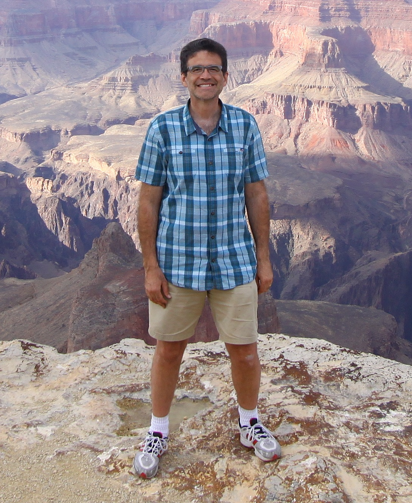

ABOUT:

Chandler HC Smith
PWD (in training)
0-University
I was born in Marysville Arizona and only 10 months later relocated to Colorado, where I lived for next 10 years of my childhood. Then, due to promotion that my father received, I moved to California where I spent the majority of my formative years. All the way from 4th grade to High School with its ups and downs to University with its fun challenging classes.
During University I spent winters Studying, Snowboarding, making my own snowboards, reading philosophy, and enjoying life. I spent summers at the beach, usually twice - once in the morning and once in the evening. I loved Skimboarding and was actually pretty good - sorry, no photos.
Entering the Workforce
I graduated from UCI with a degree in Physics and a minor in Mathematics. I leveraged all this eduction and became a Math and Science Teacher. I have worked at 4 schools, in the States and overseas, and taught: General Science, Physical Science, Integrated Science, Chemistry, Physics, Algebra I, Algebra II, AP Calculus, and Futher Mathematical Methods for Physicists.
Married - No Kids
Two years after becoming a teacher, I meet the most wonderful person in the world. We courted and then decided to tie the knot. This has been one of the most amazing journeys in my life. I have been very blessed with a wonderful wife. She is incredible, supportive, and always in my corner.
Married - 3 Kids and Moving to Europe
My wife is always full of wonderful surprises. One night she came home and asked what I though of moving overseas? I responded, "If I can find a job, sure, why not?"
Before I knew it I had a job in the Czech Republic at a British/American school.
I really consider these to be some of my most formative years. The interest in adventure really kicked into full swing and boy did we see the world. This was one of the best 5 years of our lives. We added 2 kids to the original 1, bringing the total to the current 3. We travelled on 3 or 4 continents, depending on whether you consider England a continent.
Prague, a Time of Change
This was a time of change, of rediscovering myself.
What did I want out of life?
This is where my love of Photography and design really took a more proper form. I knew that I wanted to add something to this world that would revolutize people's lives. I am convinced that I can do this through coding/programming and creating/inventing! I am very interested in UX/UI and plan on being part of the team that moves forward in this area.
Dev BootCamp
I am so excited and looking forward to learning and contributing. I am so excited about working with others who have the same passion and getting to learn from them.
Here's to us Boots!